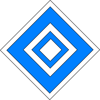
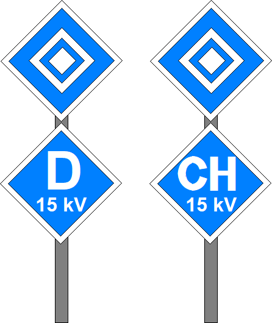

01
Bedeutung
Halt für Fahrzeuge mit gehobenen Stromabnehmern.
02
Beschreibung
Ein auf der Spitze stehender weißer quadratischer Rahmen mit innenliegendem weißen Quadrat.

03
Gültigkeit
Das Signal zeigt an, dass Fahrten darüber hinaus für Triebfahrzeuge mit gehobenen Stromabnehmern verboten sind.
04
Vorbeileiten am Signal El 6
Der Eisenbahninfrastrukturunternehmer darf das Vorbeileiten der Spitze eines Triebfahrzeugs mit gehobenen Stromabnehmer am Signal El 6 zulassen. Der Eisenbahnverkehrsunternehmer regelt, unter welchen Bedingungen und wie die Vorbeifahrt der Spitze eines Triebfahrzeugs mit gehobenen Stromabnehmer am Signal El 6 erfolgen darf.
05
Beleuchtung
Das Signal ist rückstrahlend oder beleuchtet, wenn der Betrieb es erfordert.
06
Profilwechsel
Das Signal kann mit einer auf der Spitze stehenden weiß- und schwarzumrandeten blauen quadratischen Tafel ergänzt sein, auf der sich eine weiße Länderkennung befindet. (z.B. "D" für Deutschland oder "CH" für Schweiz).
Unter der Länderkennung kann die Spannung der Fahrleitung gezeigt werden.
Das Signal El 6 mit Zusatztafel gilt nur für Fahrzeuge, deren gehobener Stromabnehmer der gezeigten nationalen Bauart entspricht.
